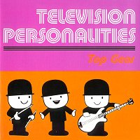

Television Personalities |
 1991 - Overground - OVER48/CD - LP/CD Songs: Painter Man Baby, You're Only As Good As You Should Be If I Could Write Poetry This Heart's Not Made Of Stone How I Learned To Love The Bomb Picture Dorian Gray All My Dreams Are Dead Not For The Likes Of Us I Hope You Have A Nice Day Look Back In Anger Goodnight Mr. Spaceman La Grande Illusion Little Works Of Art Bike I Know Where Syd Barret Lives When Emily Cries I Remember Bridget Riley Magnificent Dreams Overground Record present: The Television Personalities recorded live in Osaka, Japan 6 April 1995 (note: the date is wrong: it's 1994) Daniel treacy sings and plays the guitar, Jowe head esq. plays the bass guitar, Lenny Helsing plays the drums. All songs written by Daniel Treacy published by Twist and Shout music except "Painter Man" written by Pickett / Phillips published by EMI United Partnership, "Bike" written by Syd Barrett published by Essex Music. Alison Wonderland did the sleeve with help from Simon Strong. Kenji took the photograph. Lenny Helsing appears courtesy of the Thanes. Flour graders appear courtesy of Stephen Drennan.
Now Click here for your exciting
Television Personalities "Live in Japan" picture diary. |